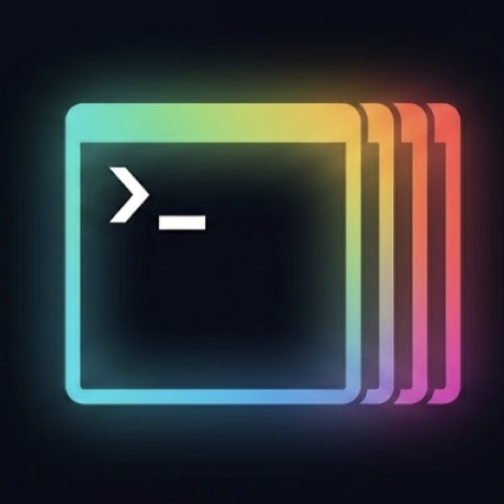
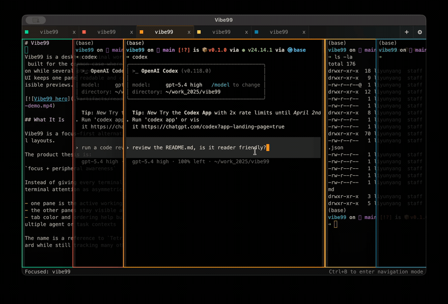

Vibe99
Tauri 2 · Rust · ~5 MiBOne focused pane, peripheral vision on the rest
一主聚焦、余光巡视的多 Agent 终端工作台

Tabs hide background agents until you forget they finished; split grids shrink every pane until none are readable. Vibe99 keeps your active terminal wide in the foreground and stacks the rest in peripheral vision.
- Stacked layout & Okabe-Ito palette — lock onto any agent visually at a glance.
- Full keyboard control —
Ctrl+Tab, spatial arrows, fuzzy palette, andCtrl+Bnav mode. - Tunable UI & power features — custom width/opacity/fonts, breathing alerts, Shell Profiles, and WSL.